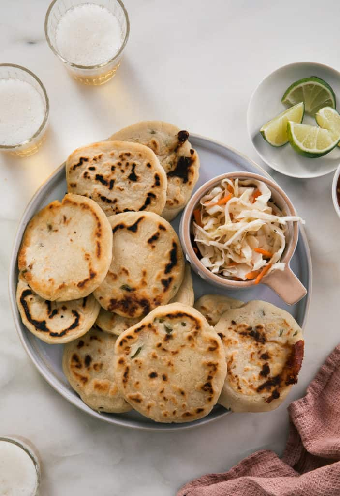

Pupusas

Description
Pupusas are a Salvadoran dish made of masa stuffed with your choice of fillings. This recipe uses cheese, jalapeño, and squash.
Ingredients
Dough
- 3 cups masa harina
- 2 teaspoons kosher salt
- 2.75 cups cold water
Filling
- 2 cups mozzarella cheese
- 0.5 cup pickled jalapeño peppers, diced
- 0.5 cup diced roasted butternut squash
Instructions
- In a medium bowl, whisk together the masa harina and salt. Pour in the cold water and using a spatula, stir the masa until mostly combined. Then, using your hands, mix the dough until a very soft dough forms. The dough will be very soft. This is totally okay; this means a delicious pupusa is on the way!
- I found it easiest to use a 2 ounce ice cream scoop and scoop out the masa into balls onto a piece of parchment. You could also do this with your hands but be sure to make the water/oil mixture above and coat your hands with it first.
- Add the water to a measuring cup and pour in the oil (you can eyeball this). Lightly dip your hands in the water/oil mixture, making sure your palm are evenly coated. This will make it so the masa doesn’t stick to your hands.
- Preheat your oven to 200 degrees F. I like to place the pupusas in the oven while I make the rest of the pupusas so they can stay warm and melty. I placed a cooling rack atop a baking sheet and placed it in the oven.
- Working one at a time, flatten the balls gently until they're about 1/2-inch thick discs. Place a tablespoon or two of mozzarella cheese, a small bit of diced jalapeño and squash into the center and wrap the dough around the filling creating a half moon shape. Pinch the edges to seal it completely. And then pat the dough gently, flattening it and alternating hands until it reaches about 1/4-inch thick and about 4-inches in diameter. Feel free to re-grease your hands as needed. Repeat with the remaining balls of dough.
- Meanwhile, preheat a cast iron skillet over medium heat. Add a teaspoon of neutral oil and brush the surface with a silicon brush. Add the pupusas to the pan, fitting two to three at time. Don’t be shy to break out another cast iron skillet (if you own it). Cook each pupusa for 4 to 6 minutes per side and then transfer to the baking sheet in the oven. Repeat this process until you’ve worked your way through all of the pupusas.